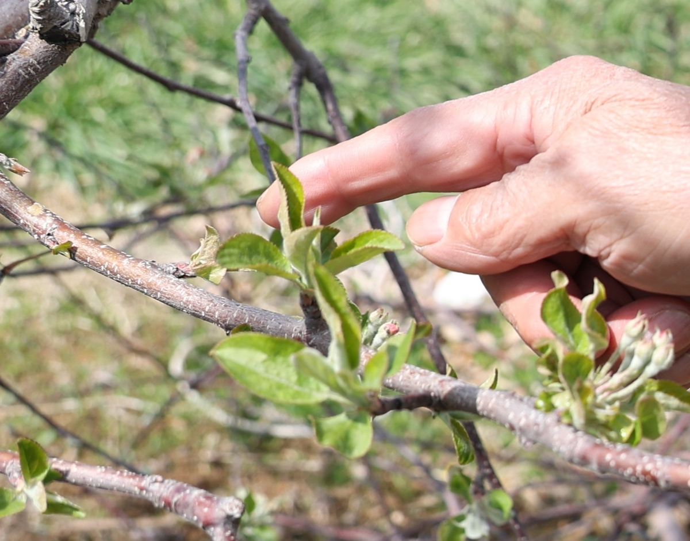
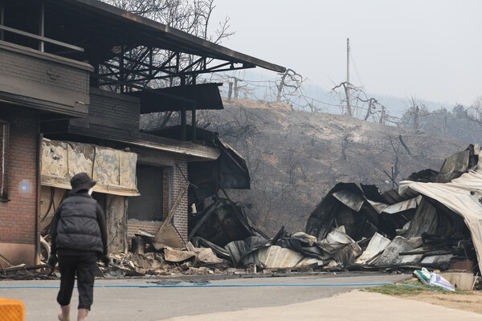
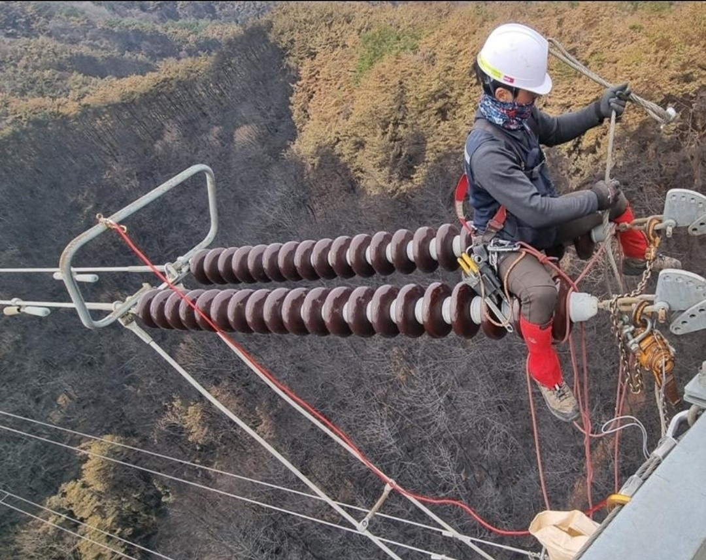

‘대형산불 1년’
숲의 보물, 송이의 눈물
소나무가 오랫동안 자라고 그곳에서 공생하는 균이 형성돼야 비로소 송이가 자랄 수 있어요. 산불이 난 숲에서는 그 회복을 수십 년 기다려야 할 수 있습니다.
최근 산불 때문에 숲 샐러드의 재료인 송이버섯, 밤,
고사리와 같은 임산물을 구하기 어려워졌어요.
하지만 사라지는 것은 숲의 먹거리뿐만이 아닙니다.
산불의 열기는 사과와 같은 우리의 소중한 먹거리 공급과
생산에도 영향을 끼쳐요.
전주·전선과 같은 전력설비도 훼손해 우리의 일상에 영향을 준답니다.
산불은 숲에서 시작되지만, 그 피해는 우리의 일상까지
이어집니다.
소나무가 오랫동안 자라고 그곳에서 공생하는 균이 형성돼야 비로소 송이가 자랄 수 있어요. 산불이 난 숲에서는 그 회복을 수십 년 기다려야 할 수 있습니다.

산불의 열기로 나무 속이 마르면 개화를 하지 못하거나, 꽃이 피더라도 영양분을 제대로 공급받지 못해 사과로 성장하기 어려울 수 있어요.

주요 산지가 피해를 입으면서 사과·마늘·고추·송이버섯 등의 공급 차질 우려가 커지고, 시장에서도 가격 상승 조짐이 나타날 수 있어요.

산불은 철탑과 변전소, 전주와 전선 등 전력 시설에도 영향을 줄 수 있습니다. 숲에서 시작된 불이 우리의 전기 사용과 생활 기반까지 위협하는 것이죠.
 A.
A.